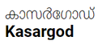

Kasaragod district, which is located at the northern end of Kerala, was formed on 24th May, 1984. The District formed on the basis of the order of 19.05.1984 of GO (MS) number 520/84 / RD, comprising of Hosdurg and Kasaragod taluks which were part of undivided Kannur District. In the east the district is Kodagu and Dakshina Kannada districts of Karnataka, the Arabian Sea in the west, and the Kannada District of Karnataka in the north. The district is bounded by the Kannur district.We can say that Kasaragod is the crown of the state Kerala, Land of many differnt languages, the history of the invasion and resistance, testimonies of historical forts, remainings of innovative culture of the modern stone age like ‘Chenkallarakal’, ‘Nannangatikal’, ‘Muniyarakal’, Inscriptions of historical rulers and their practices, Lush green land of highlands of western ghat, the midlands, the unique traditions and practice of worship. Kasargod is reputed for its practice of sharing the culture and languages.